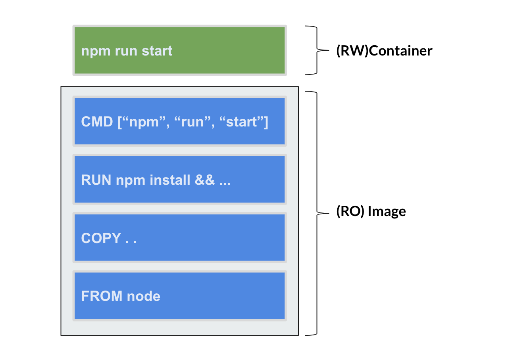
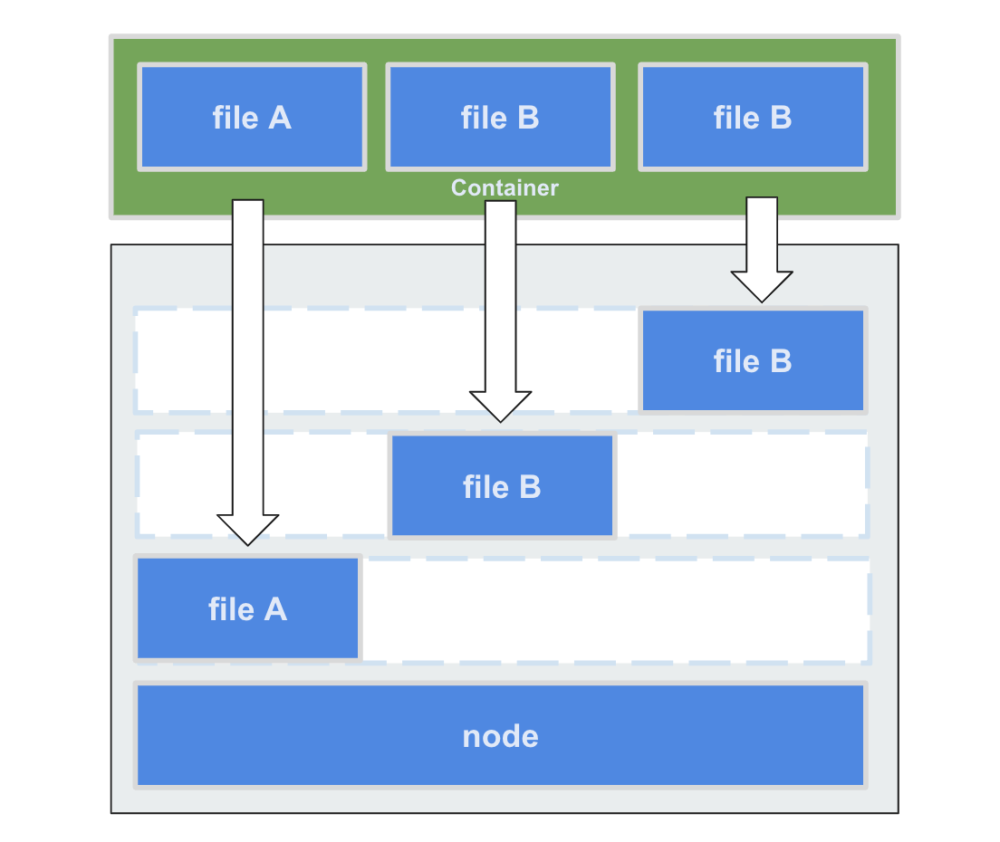
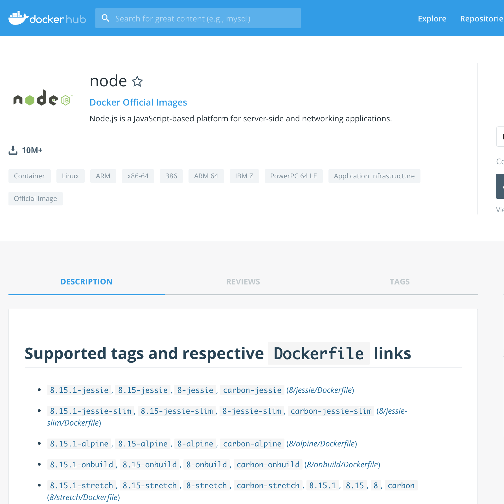

イメージの仕組み
まずはDocker Image のおさらいです。
Docker Image はDockerfileによって作成される特定の環境のスナップショットです。
そしてそのDocker Image を実行することでDocker Container を起動することができることがわかりました。
ここで少し深掘りしてDocker Image/Containerの仕組みについて学びましょう。
Container¶

前提として、生成されたDockerImageはRead Onlyです。 Docker Containerを作成することで変更可能なレイヤーが新しく作成され、その上でプロセスを動かします。
コンテナ起動後、どのファイルが変更されたかは docker diff を使用して確認することができます。
docker diff は非常に有用で、Dockerfile記述時のデバッグによく使用します。
$ docker run --name hoge ubuntu touch /tmp/hoge.txt $ docker container diff hoge C /tmp A /tmp/hoge.txt
Unison FileSystem¶

最後に、Dockerのファイルシステムについです。
Docker Container から Docker Image へファイルを読み込む際、気をつけないとオーバーヘッドが大きくなります。
Containerレイヤーに操作対象のパスが存在しない場合、Imageレイヤーにファイルが無いかの捜査を行います。
この捜査は1レイヤーごとに見ていくため、レイヤーが多くなればなるほどオーバーヘッドが大きくなっていきます。
また、Dockerがデフォルトで使用しているファイルシステムではCopy On Write方式でファイルの読み書きを行います。
ファイルの更新がかかる度に捜査を実行するため、ログのように書き込みの激しいパスはDataVolumeを使用してUnison FileSystemを回避すると良いでしょう。
Dockerイメージ¶
Docker Image は復数のDocker Image の積み重ねでできています。
Node.jsのフレームワークExpressを構築しながらイメージがどのような作られ方をするのか見ていきましょう。
1. Expressプロジェクトの作成¶
ホスト上にNode.jsが存在しないことを確認します。
$ node -v bash: node: command not found
Nodeのシェル起動します。
ここで重要なのは現在のディレクトリをコンテナの /data へマウントしていることです。
$ docker run -it -p 3000:3000 -v `pwd`:/data node:10-alpine ash
コンテナ内に入った後、Node.jsが存在することを確認します。
# node -v v10.15.3
Expressプロジェクトの作成を行います。
# cd /data # npm install -g express-generator # express myapp # cd myapp # npm install
ここでシェルを抜けずに npm start でExpressを起動すると、3000ポートでExpressの起動を確認することができます。
2. Dockerfileの作成¶
ホストに戻り、作成したExpressが存在するか確認します。
$ cd myapp/ $ ls app.js bin node_modules package-lock.json package.json public routes views
さて、ここからは本題のDockerfileに取り掛かります。
早速作成していきましょう
$ vi Dockerfile
FROM node WORKDIR /scripts COPY . . RUN npm install RUN groupadd app RUN useradd -g app -m app RUN mv /root/.config /home/app/ RUN chown -R app:app /scripts /home/app/.config USER app EXPOSE 3000 CMD ["npm", "start"]
作成したDockerfileをビルドして起動してみましょう。
$ docker build -t myapp:1 . $ docker run -p 3000:3000 myapp:1
開放された3000ポートへアクセスし、Expressプロジェクトが起動したことを確認します。
3. イメージの確認¶
イメージサイズを確認してみると916MBとかなり大きなサイズになっていることが確認できます。
$ docker images myapp:1 REPOSITORY TAG IMAGE ID CREATED SIZE myapp 1 873c0bd050b0 About a minute ago 916MB
イメージは1つのイメージで完結しているわけではなく、複数のイメージを積み重ねて最終的に1つのイメージになります。
また、積み重ねられたイメージのことを中間イメージと呼びます。
どのような歴史でイメージがビルドされたかを知るには docker history を使用することで可能です。
実際にどのようなイメージが作成されたか見てみましょう。
$ docker history myapp:1 IMAGE CREATED CREATED BY SIZE COMMENT 873c0bd050b0 2 minutes ago /bin/sh -c #(nop) CMD ["npm" "start"] 0B 6c87850e5b9c 2 minutes ago /bin/sh -c #(nop) EXPOSE 3000 0B adb2d5e15153 2 minutes ago /bin/sh -c #(nop) USER app 0B af240f408ef9 2 minutes ago /bin/sh -c chown -R app:app /scripts /home/a… 6.04MB 3a643e18ceb1 2 minutes ago /bin/sh -c cp -R /root/.config /home/app/.co… 55B 0250e7178b8c 2 minutes ago /bin/sh -c useradd -g app -m app 333kB be4f90a23b4e 2 minutes ago /bin/sh -c groupadd app 1.74kB dac4f811a2c5 2 minutes ago /bin/sh -c npm install 405B af2f3ac02ec0 2 minutes ago /bin/sh -c #(nop) COPY dir:6879f71a2469a6c1c… 6.04MB 28d1563a64f5 2 minutes ago /bin/sh -c #(nop) WORKDIR /scripts 0B a9c1445cbd52 24 hours ago /bin/sh -c #(nop) CMD ["node"] 0B <missing> 24 hours ago /bin/sh -c set -ex && for key in 6A010… 5.07MB <missing> 24 hours ago /bin/sh -c #(nop) ENV YARN_VERSION=1.15.2 0B <missing> 24 hours ago /bin/sh -c ARCH= && dpkgArch="$(dpkg --print… 63.1MB <missing> 24 hours ago /bin/sh -c #(nop) ENV NODE_VERSION=11.13.0 0B <missing> 3 days ago /bin/sh -c groupadd --gid 1000 node && use… 333kB <missing> 3 days ago /bin/sh -c set -ex; apt-get update; apt-ge… 562MB <missing> 3 days ago /bin/sh -c apt-get update && apt-get install… 142MB <missing> 3 days ago /bin/sh -c set -ex; if ! command -v gpg > /… 7.81MB <missing> 3 days ago /bin/sh -c apt-get update && apt-get install… 23.2MB <missing> 3 days ago /bin/sh -c #(nop) CMD ["bash"] 0B <missing> 3 days ago /bin/sh -c #(nop) ADD file:843b8a2a9df1a0730… 101MB
"CREATED" が特別大きく容量をとっているものはありませんね。
そもそも FROM node で設定したイメージサイズはどうだったでしょうか。
$ docker images node REPOSITORY TAG IMAGE ID CREATED SIZE node latest a9c1445cbd52 24 hours ago 904MB
904MBということで、一番の容量が大きいのはベースイメージの"node"でした。
中間イメージへアクセス
docker history で中間イメージにもIMAGEのIDを確認することができます。
このIMAGE IDを指定して実行することで、その時点までの実行結果を見ることが可能です。
4. ベースイメージがイメージサイズに及ぼす影響を確認する¶
ここでDockerHubを見て、そもそもどんなイメージが配布されているのか見てみましょう。
node - Docker Hub

様々なバージョンとが存在することがわかりました。
今回は軽量なイメージslimをすることでどれぐらい変わるのか確認してみましょう。
$ vi Dockerfile
-FROM node +FROM node:slim WORKDIR /scripts COPY . . RUN npm install RUN groupadd app RUN useradd -g app -m app RUN mv /root/.config /home/app/ RUN chown -R app:app /scripts /home/app/.config USER app EXPOSE 3000 CMD ["npm", "start"]
myapp:2 でビルドして、ちゃんと動作するかの確認をします。
$ docker build -t myapp:2 . $ docker run -p 3000:3000 myapp:2
さて、イメージの確認をします。
ベースイメージを変更したことで5倍以上の軽量化に成功したことが確認できます。
$ docker images myapp REPOSITORY TAG IMAGE ID CREATED SIZE myapp 1 61d3ff752744 3 seconds ago 916MB myapp 2 919f447ae003 About a minute ago 160MB
docker history ではどのようになっているでしょうか。
$ docker history myapp:2 IMAGE CREATED CREATED BY SIZE COMMENT 919f447ae003 7 minutes ago /bin/sh -c #(nop) CMD ["npm" "start"] 0B e37397084cd3 7 minutes ago /bin/sh -c #(nop) EXPOSE 3000 0B 1ff40a8123e8 7 minutes ago /bin/sh -c #(nop) USER app 0B 51e11e9a3d86 7 minutes ago /bin/sh -c chown -R app:app /scripts /home/a… 6.04MB 1b91ba45db2d 7 minutes ago /bin/sh -c mv /root/.config /home/app/ 55B b3c9309ed6a6 7 minutes ago /bin/sh -c useradd -g app -m app 333kB ef542eb3a946 7 minutes ago /bin/sh -c groupadd app 1.7kB dc6fe46713a6 7 minutes ago /bin/sh -c npm install 405B 6fbe74ea79d6 7 minutes ago /bin/sh -c #(nop) COPY dir:b4b2e96b9cb91de8a… 6.04MB c0f667326e1b 7 minutes ago /bin/sh -c #(nop) WORKDIR /scripts 0B e52c23bbdd87 29 hours ago /bin/sh -c #(nop) CMD ["node"] 0B <missing> 29 hours ago /bin/sh -c set -ex && for key in 6A010… 5.07MB <missing> 29 hours ago /bin/sh -c #(nop) ENV YARN_VERSION=1.15.2 0B <missing> 29 hours ago /bin/sh -c buildDeps='xz-utils' && ARCH=… 87.3MB <missing> 29 hours ago /bin/sh -c #(nop) ENV NODE_VERSION=11.13.0 0B <missing> 4 days ago /bin/sh -c groupadd --gid 1000 node && use… 333kB <missing> 4 days ago /bin/sh -c #(nop) CMD ["bash"] 0B <missing> 4 days ago /bin/sh -c #(nop) ADD file:4fc310c0cb879c876… 55.3MB
ユーザーが作成した領域は変更がありませんね。
ここでは選択するベースイメージによってイメージサイズが大きく変わるということがわかりました。
5. 余計な中間イメージを作成させない¶
RUNはコマンドを実行しているので、パイプで繋げることも可能です。
複数実行していたRUNを1つにまとめてみましょう。
FROM node:slim WORKDIR /scripts COPY . . -RUN npm install -RUN groupadd app -RUN useradd -g app -m app -RUN mv /root/.config /home/app/ -RUN chown -R app:app /scripts /home/app/.config +RUN npm install \ + && groupadd app \ + && useradd -g app -m app \ + && mv /root/.config /home/app/ \ + && chown -R app:app /scripts /home/app/.config USER app EXPOSE 3000 CMD ["npm", "start"]
サイズとhistoryを確認してみましょう。
$ docker images myapp REPOSITORY TAG IMAGE ID CREATED SIZE myapp 3 87ea6e63c875 23 seconds ago 160MB myapp 1 61d3ff752744 39 minutes ago 916MB myapp 2 919f447ae003 41 minutes ago 160MB $ docker history myapp:3 IMAGE CREATED CREATED BY SIZE COMMENT 87ea6e63c875 About a minute ago /bin/sh -c #(nop) CMD ["npm" "start"] 0B 84c2a9450a3c About a minute ago /bin/sh -c #(nop) EXPOSE 3000 0B cb7bdcdfaeea About a minute ago /bin/sh -c #(nop) USER app 0B b42cddfc14c6 About a minute ago /bin/sh -c npm install && groupadd app &… 6.38MB 97429d35f0cc About a minute ago /bin/sh -c #(nop) COPY dir:0d7e6d3b214fb8d61… 6.04MB c0f667326e1b 42 minutes ago /bin/sh -c #(nop) WORKDIR /scripts 0B e52c23bbdd87 30 hours ago /bin/sh -c #(nop) CMD ["node"] 0B <missing> 30 hours ago /bin/sh -c set -ex && for key in 6A010… 5.07MB <missing> 30 hours ago /bin/sh -c #(nop) ENV YARN_VERSION=1.15.2 0B <missing> 30 hours ago /bin/sh -c buildDeps='xz-utils' && ARCH=… 87.3MB <missing> 30 hours ago /bin/sh -c #(nop) ENV NODE_VERSION=11.13.0 0B <missing> 4 days ago /bin/sh -c groupadd --gid 1000 node && use… 333kB <missing> 4 days ago /bin/sh -c #(nop) CMD ["bash"] 0B <missing> 4 days ago /bin/sh -c #(nop) ADD file:4fc310c0cb879c876… 55.3MB
少なくなりましたね。
レイヤーを作成する中間イメージが減ったことでより良いDockerイメージが作成できました。
レイヤーと中間イメージ
レイヤーと中間イメージは別物です。
Dockerfile上でコマンド( EXPOSE , ENV , COPY , etc)を実行するたびに中間イメージが作成されます。
レイヤーは RUN , COPY , ADD の実行時に増やし、UnisonFileSystemへの影響があります。
基本的に、中有間イメージではなくレイヤーを増やさないこと意識するのが良いでしょう。
まとめ¶
- Dockerイメージは複数のイメージが積み重なったもの
- Dockerfileの書き方によってファイルの読み書きがボトルネックとなり、遅いイメージができる